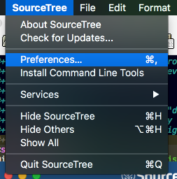

Useful Links
- Slides:
Printed Notes:
Keep these open in your browser
Configuring SourceTree
Installation
- Sign up with Atlassian
- Register your copy
- Skip step that connects to BitBucket or Github
Install Command Line Tools
From the SourceTree menu:

Set Preferences
From the SourceTree menu:
Make sure your user information is correct:

Set up the global gitignore file.

You can edit it from here as well.
Set push branches to "matching":

Connect to Github
Let's go ahead and connect up to your GitHub account.
Under the Account tab, click on "Add"

Then select "GitHub", "OAuth", and click on "Connect"

Log in to GitHub with your account

After logging in, click on "Generate"

Have SourceTree generate the key pair.
You can leave the Pass phrase fields empty.

Click on "OK" to enable the connection to GitHub

You are now connected to your GitHub account

Verify that the SourceTree key is on Github.
In the browser, go to your account, Settings -> SSH and GPG Keys
Look for the SourceTree key

Getting Familiar with SourceTree
Menubar
The menubar at the top has the major operations

Sidebar
Hover over the major items in the side bar to show or hide them
Same for remotes

Creating a new project
WIth SourceTree, it's super easy to start a new project by creating a remote repo on Github.
Create the Remote Repo
Start creating the remote repo

Select "Create Remote"

Create the remote repo

Clone the remote to your local machine
Click on remote to show your remote repos

Use the search box to filter the repos

Clone the repo

Set the location for the clone on your local machine

Click the "Clone" button

Look at your new repo!

but it's empty…
Create some new content
Open you new project in your editor
Add a README.md file
# This is My Git Class Demo
Isn't it **great**?
Save the file and go back to SourceTree
Stage the changes
You can see the new content reflected in SourceTree

Click in the box by the README file to stage it.
Commit and Push the content
Click in the commit text box to start the commit process.

Type in the commit message, leave the "Push" box checked, and click on "Commit"

The command log will show the execution and results, including any errors

Create the Local Repo First
You can also create the local repository first with SourceTree
(… and create the remote at the same time!)
Choose location

Create the local repo

Tell it the location

Create the remote

See the new repo on Github

But it's still empty
So create some content!

Add, commit, and push

Output from commit message

See local branches
At first, SourceTree hides the local branches, so tell it to show them

See the remote branches, too

Finally, look over at Github

Tracking and Reverting Changes
Before staging
After staging, before committing
After committing, before pushing
After pushing
Multiple Development Paths
Branching
To make a new branch from an existing branch, click the "Branch" button:

In the dialog, enter the new branch name:

Leave the "Working copy parent" and "Checkout new branch" options selected.
Press then "Create Branch" button.
Merging
Rebasing
Rebasing is a complicated topic, it takes some time to understand what's going on.
It's like merging, except not exactly
Interactive Rebase
Sadly, this is where SourceTree falls down
- it's incorrect
- it's interface is confusing